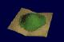
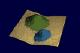
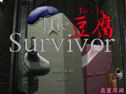
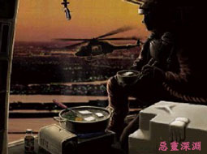

|
惡靈古堡２-----隱藏要素
|
生命存量
| Fine | 生命力60%以上 | 移動速度正常 |
| Caution | 生命力30~60% | 移動速度下降一成 |
| Caution | 生命力15~30% | 移動速度下降一成 |
| Danger | 生命力15%以下 | 移動速度下降五成 |
| Poison | 中毒狀態 | 移動速度下降一成
每一秒生命力下降0.5%，不過不會因此死亡 |
藥草調和
| 綠色藥草 | 生命力恢復25% | |
| 藍色藥草 |  |
解毒 |
| 紅色藥草 |  |
不可單獨使用 |
| 綠色+綠色 |  |
生命力恢復50% |
| 綠色+綠色+綠色 |  |
生命力全恢復 |
| 綠色+紅色 | 生命力全恢復 | |
| 綠色+藍色 |  |
生命力恢復25% +解毒 |
| 綠色+綠色+藍色 |  |
生命力恢復50%+解毒 |
| 綠色+綠色+綠色 |  |
生命力全恢復+解毒 |
等級評定
|
Ｓ級 |
Ａ級 |
Ｂ級 |
Ｃ級 |
D級 |
|
270~300分 |
200~269分 |
145~199分 |
100~144分 |
99分以下 |
|
破關時間超過２小時 30 分時，每過 30 分扣分數 10 分 每存檔一次扣分數５分 每使用一次急救噴霧扣 10 分 使用隱藏武器等級下降一 級，漏拿文件、檔案每一項扣５分 |
||||
| 服裝的更換 Leon或Claire表關選擇NORMAL，前往警署的路上不拿任何道具， 到警察屬前庭後，到樓下的穿廊找 身穿黃色背心的S.T.A.R.S成員Brad，此時他已經變成僵屍，將他打倒後在他身上找Special Key，遊戲 中可到沖洗照片的暗房、鎖住的鐵櫃進行換裝，Leon有兩套衣服，Claire有一套衣服和一把Colt S.A.A 手槍，要注意，Brad不同於一般僵屍，生命力和攻擊力都相當高，在主角彈藥和藥品都缺少的情況 下，還是得小心應付。其實以後再來也無妨，不過進警署前要先見過他。Leon換衣服後射擊速度會 變快。 震動版的補充 想要不會影響等級又能把遊戲變簡單？在震動版裡有這樣的設計，遊戲中按SELECT進入遊戲選單， 接著再進入Key Confing的手把控制，按住R1不放，連按口10次，等AUTO的字變紅色就算成功了，他 會讓你的任何武器子彈無限，如果想調回來，只要重複動作就行了。不過有一點要注意，如果不是 震動版，照上述動作按口3次時AUTO的字也會變紅，別高興的太早，他會讓你再也無法使用R1、L1 來瞄準、搜尋敵人，如果想增加難度倒是可以試試。 用NORMAN模式以S級破關，會出現Extreme Battle模式可供紀錄。 N64版的補充 子彈無限的秘技：在按鍵設定畫面按↑、↑、↑、↑、→、→、→、→、L、R、L、R、C→、C→， 從此所有的武器子彈無限。 PC版的補充 在第４生存者中，進入物品欄，鍵入上上下下左右左右X，即可取得彈藥無限的優惠。 |

The 4th survivor
|
主角：Hunk 出現條件：選擇NORMAL，Leon或Claire裡關以S級破關，就可以把第四生存者的資料保存下來 ， 以後讀取就可以玩了。 裝備：H&K VP70一把、手槍子彈168發、雷明頓散彈槍一把、散彈槍子彈20發、沙漠之鷲一把、 沙漠之鷲子彈16發、綠綠藍的調和藥草２份。 目的地：警察署２Ｆ停機坪(有墜毀直昇機的平台) 路線：下水處理場出口(start)─處理場淨水室─下水處理場中央部─下水道通路─警犬舍─地下 西側通路─地下停車場─地下東側通路─一樓東側通路─西側辦公室─右側通路─大廳 ─服務處─一樓西側通路─會議室前走廊─置物室前走廊─二樓石像迴廊─二樓西側迴 廊─二樓大廳─圖書室─大廳二樓迴廊─接待室─美術室前迴廊─二樓東側迴廊─停機 坪(end) 彈藥盡量別浪費吧！一路上的怪物能閃就閃，不要做無謂的戰鬥，減少中毒的機率，相信應該 不難過才對。 |


The 豆腐 survivor
|
主角：To-fu 出現條件：在The 4th survivor出現後，在用其紀錄表-裡-表-裡破關兩次，就可把豆腐關紀錄下來。 裝備：藍道夫刀一把、綠色藥草兩株、藍色藥草一株。 目的地：警察署２Ｆ停機坪(有墜毀直昇機的平台) 路線：同 The 4th survivor。 這........這一塊受傷還會變紅色的豆腐，武器只有一把刀，所以引誘敵人和閃躲的技巧很重要 ， 了解每一種怪物的習性，多利用地理位置上的死角，如果你真的過了，相信惡靈裡再也沒什麼 能難倒你了........ |

Extreme Battle
|
主角：Claire、Leon、Ada、Chris (一代男主角) 主角使用條件：Claire 和 Leon 是基本人物，使用其中一人破關就可進入 LV.2，出現新人物供選擇 （用 Claire 破關出現 Chris，用 Leon 破關出現 Ada），用新人物破關後可進入 LV.3，此時人物全 部出現。 出現條件：選擇NORMAL，Claire 或 Leon 表、�媄鬘HＳ級破關。 初期裝備： |
| Leon | Claire | Ada | Chris |
| H&K VP70手槍
M1100-P散彈槍 50A.E手槍 色帶 急救噴霧 藍色藥草 |
M79硫彈槍
火炎彈 硫酸彈 色帶 急救噴霧 藍色藥草 |
Colt.S.A.A.手槍
MAC11衝鋒槍 十字弓槍 色帶 混合藥草 |
M92FS手槍
M1100散彈槍 火箭砲 色帶 急救噴霧 |
|
遊戲任務： 起點是在研究所的監控室，玩家的任務就是跑回警署找出四顆炸彈，途中可以記錄，並且可以 拿到其他裝備，而四顆炸彈的位置是隨機出現在下列九處： |
| 警察署一樓視聽室桌上 |
| 警察署三樓機關室地上 |
| 警察署二樓S.T.A.R.S辦公室桌上 |
| 警察署B1拘留所床上 |
| 警察署一樓作戰會議室壁爐上 |
| 警察署二樓署長個人收藏室桌上 |
| 警察署一樓置物小屋外管理室桌上 |
| 警察署二樓圖書室機關小格內 |
| 警察署一樓值班休息室床上 |
（地圖請見惡靈古堡２地圖攻略）

Data gallery
Value Plus特別版加附之３Ｄ圖檔
惡靈深淵Biohazard Abyss http://98.to/coolbio